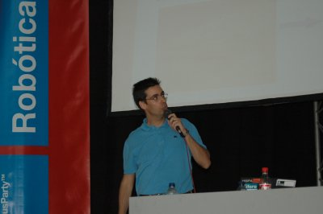

Esta obra está bajo una licencia de Creative Commons.
|
"Diseño de Robots Ápodos: Cube Revolutions". Área de CampusBot. Campus Party. Valencia. 2005 |
|
 |
Título: “Diseño de Robots Ápodos: Cube Revolutions”
Duración: 30 minutos
Evento: Área de CampusBot. Campus Party 2005.
Organiza: Alejandro Alonso Puig. Coordinador del área de Campus Bot.
Lugar: Feria de Valencia.
Fecha: 27 de Julio de 2005
Ponente: Juan González Gómez (Escuela Politécnica Superior, UAM)
En el campo de la robótica móvil existen robots que no utilizan ni ruedas ni orugas ni patas para desplazarse. Dentro de este grupo se encuentran los robots ápodos. Por otro lado, en 1994 Mark Yim propuso un nuevo enfoque en la construcción de robots móviles: la robótica modular reconfigurable. El robot Cube Revolutions, descrito en esta presentación, es un ápodo desarrollado bajo la perspectiva de la robótica modular reconfigurable. Está compuesto por la unión en cadena de 8 módulos iguales (Módulos Y1). Se desplaza en línea recta, mediante ondas que recorren su cuerpo desde la cola hasta la cabeza. El robot calcula las posiciones de las articulaciones a partir de los parámetros de la onda: forma, amplitud y longitud de onda. Para la electrónica se han usado diferentes enfoques. En esta presentación se muestra la más sencilla: control mediante un microcontrolador de 8 bits conectado a un PC por medio de un cable serie. Cube Revolutions es un robot para la investigación, que está en desarrollo. Se muestran los algoritmos empleados para la locomoción y los que se van a emplear en un futuro: algoritmos genéticos que permitan determinar las secuencias óptimas de movimiento.
La conferencia estaba inicialmente programada para ser de una hora de duración. Sin embargo, Alejandro y yo decidimos agrupar diferentes demos de robots en ese espacio. La charla sobre Cube Revolutions se transformó así en una demostración en vivo, más que en una conferencia. Pensamos que para la CampusBot es más dinámico y divertido centrarnos en las demos. Así además, la gente se puede acercar y hacer preguntas. Si no es en el momento de la charla, en cualquier otro momento de la Campus.
|
Descarga de la presentación |
|
CampusParty-cube-rev.pdf (2,2 MB) |
Presentación en PDF |
|
CampusParty-cube-rev.sxi (6,9 MB) |
Presentación para OpenOffice 1.1.3 |

Esta
obra está bajo una licencia
de Creative Commons.
Robot Cube Revolutions
Información sobre los módulos Y1
Artículo presentado en el Clawar 2004, sobre Cube Revolutions: “Locomotion of a Modular Worm-like Robot using a FPGA-based embeded MicroBlaze Soft-processor”
Artículo presentado en el JCRA 2004, sobre Cube Revolutions: “Locomoción de un Robot Ápodo Modular con el Procesador MicroBlaze”
Cube Reloaded, versión anterior de Cube Revolutions.
“Diseño de Robots ápodos”, trabajo de iniciación a la investigación. Junio 2003.
Cube 2.0, versión inicial, anterior a Cube Reloaded
En este enlace puedes acceder al cuaderno de bitácora completo.
A Alejandro Alonso Puig, por la estupenda organización de la CampusBot y por invitarme a dar esta conferencia. ¡Muchas gracias!
1/Enero/2005: Añadido enlace a Cube Revolutions
20/Septiembre/2005: Publicada información en esta web